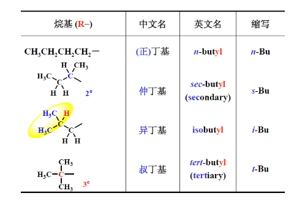
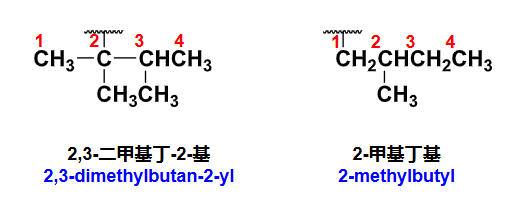
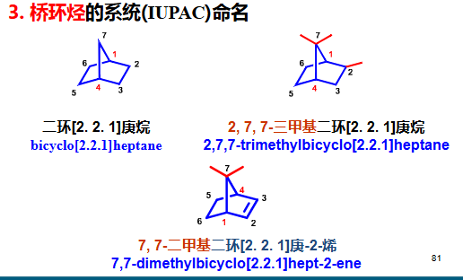

第二章 烷烃和环烷烃
章节概览
- 2.1 异构现象（构造异构与构象异构）
- 2.2 伯仲叔季碳原子
- 2.3 链状烷烃的命名
- 2.4 立体结构描述形式（伞形式、锯架式、Newman投影式）
- 2.5 链状烷烃的化学性质（氧化、裂化、自由基取代）
- 2.6 环烷烃的命名（单环、螺环、桥环）
- 2.7 环己烷的构象（椅式、船式、扭船式）
- 2.8 环烷烃的化学性质（自由基取代、开环加成）
学习目标（重点）
- 理解构造异构与构象异构的区别
- 掌握伯仲叔季碳原子的概念及判断方法
- 掌握链状烷烃的系统命名规则
- 理解Newman投影式及构象稳定性判断
- 掌握烷烃的自由基取代反应机理及选择性
- 掌握环烷烃的命名规则（单环、螺环、桥环）
- 理解环己烷的椅式构象及a/e键的概念
- 掌握环烷烃的开环加成反应
一、异构现象
参考资料：有机化学2 烷烃和环烷烃-1.pdf | 有机化学2 烷烃和环烷烃-2.pdf | 有机化学2 烷烃和环烷烃-3.pdf
1.1 基本概念
| 术语 | 定义 |
|---|---|
| 同分异构 | 分子式相同而结构不同的化合物 |
| 构造 | 分子中原子相互连接的顺序和方式 |
| 构造异构 | 分子中碳原子排列方式不同引起的异构（碳链异构） |
| 构象 | 有机分子通过σ键自由旋转而产生的不同空间形象 |
| 构象异构体 | 由构象不同形成的异构体 |
关键区别
构造异构 = 原子连接顺序不同（需断裂化学键才能转化） 构象异构 = 原子连接顺序相同，仅空间排列不同（通过单键旋转即可转化）
二、伯仲叔季碳原子
| 类型 | 符号 | 定义 | 英文名称 |
|---|---|---|---|
| 伯碳 | 与另外一个相连 | primary carbon | |
| 仲碳 | 与另外二个相连 | secondary carbon | |
| 叔碳 | 与另外三个相连 | tertiary carbon | |
| 季碳 | 与另外四个相连 | quaternary carbon |
记忆技巧
伯 = 1（连接1个）、仲 = 2（连接2个）、叔 = 3（连接3个）、季 = 4（连接4个）
三、链状烷烃的命名
详细命名规则参见 命名
3.1 基本规则
支链烷烃：看作直链烷烃的取代衍生物，把支链作为取代基（称烷基），名称中包括母体和取代基两部分，取代基部分在前，母体部分在后。
3.2 常见烷基


3.3 命名步骤
(1) 选主链
选主链规则
- 选取最长碳链为主链，称”某烷”，其它支链作为取代基
- 当几条碳链等长时，选择取代基（支链）最多的链为主链
(2) 编号
编号规则
- 从靠近取代基一端开始编号，使取代基位次最小
- 有选择余地时，使英文首字母排前的取代基编号较小
- 注意：tert不算斜体（前缀），但iso和neo算（名称组成部分）
(3) 书写
书写规则
- 取代基写在前面，母体在后面
- 取代基位次用阿拉伯数字表示，写在取代基名称前面
- 如有几种取代基，表示取代基位次的阿拉伯数字之间应加一个逗号
- 有几个相同的取代基时，将其名称合并在一起，数目用汉字表示
- 阿拉伯数字与汉字之间应加一短线
(4) 复杂支链的命名
支链命名规则
- 首先找出包含连接点碳原子的最长碳链（取代基的主链），编号时使连接点的位次尽可能小
- 连接点的位次用阿拉伯数字表示，写在”基”之前，如果连接点位次在1位，数字”1”一般省略

四、立体结构的描述形式
相关内容参见 立体化学
| 形式 | 观察方式 | 特点 |
|---|---|---|
| 伞形式 | 从斜侧面看分子模型 | 直观展示空间结构 |
| 锯架式 | 从斜侧面看分子模型 | 展示键及取代基位置 |
| Newman投影式 | 从碳碳键轴的延长线上观察 | 便于研究构象稳定性 |
4.1 Newman投影式的构象分析
| 构象类型 | 特点 | 稳定性 |
|---|---|---|
| 交叉构象 | 原子间距离最远，内能较低 | 最稳定 |
| 扭曲构象 | 介于交叉和重叠之间，有无数个 | 中等 |
| 重叠构象 | 键电子云排斥，范德华排斥力，内能较高 | 最不稳定 |
稳定性顺序
对位交叉 > 邻位交叉 > 部分重叠 > 全重叠
五、链状烷烃的化学性质
5.1 氧化反应 氧化
(1) 燃烧
(2) 部分氧化 控温
| 反应物 | 反应式 | 产物 |
|---|---|---|
| 甲烷 | 甲醇 | |
| 石蜡 | 羧酸 |
5.2 裂化和裂解 控温
高温下，烷烃裂解成较小烷烃和烯烃。
5.3 自由基取代反应 取代
(1) 反应类型
| 试剂 | 反应式 | 条件 |
|---|---|---|
| H₂SO₄ | 加热 | |
| HNO₃ | 加热 | |
| 卤素 | 光照或加热 |
(2) 反应机理

机理要点
- 链引发：卤素分子在光照或加热下均裂产生自由基
- 链增长：氯自由基与烷烃碰撞，夺取氢原子形成烷基自由基
- 链终止：两个自由基结合形成稳定分子
决速步
链增长的氯自由基和甲基自由基的碰撞是决速步。
(3) 选择性
选择性规律
- 氢原子反应活性：
- 卤素选择性：
- 温度影响：温度升高，选择性降低 控温
原理
自由基稳定性：叔 > 仲 > 伯 > 甲基自由基
六、环烷烃的命名
6.1 单环环烷烃
命名规则
- 环上有取代基时，应使取代基位次最小；遇到重键时，使重键的位次尽可能小（双键在1,2位）
- 对于不含官能团的化合物，当环和侧链并存时：
- 环上的碳原子数比侧链少 → 以开链烷烃为母体
- 碳链连有多个环 → 以开链烷烃为母体
- 其余情况 → 优先选择环为母体
- 两个环并存 → 优先选择大环为母体
6.2 螺环化合物
螺环定义
单环之间共用一个碳原子（螺原子）的多环烃。
命名规则
- 根据螺环上碳原子的总数称”螺某烷""螺某烯”或”螺某炔”
- 螺字后面的方括号内用阿拉伯数字写出除螺原子外的每个环的碳原子数（从小到大），数字之间用圆点隔开
- 从螺原子旁的小环开始顺序编号，由第一个环顺序编到第二个环；如有不饱和键或取代基，应使其位次最小
- 写出取代基的个数、位次、名称，并标明母体结构

6.3 桥环化合物
命名规则
- 编号：从一个桥头碳开始，沿最长的桥编到第二个桥头碳，再沿次长桥回到第一个桥头碳，再依次编号；编号有选择时，则使取代基的位号尽可能小
- 写出取代基的个数、位次、名称，并标明母体结构

七、环丙烷的结构

环丙烷特点
环丙烷存在较大的角张力（键角约，远小于杂化的），导致其化学性质活泼，容易发生开环反应。
八、环己烷的构象
8.1 构象类型
| 构象 | 特点 | 稳定性 |
|---|---|---|
| 椅式构象 | 无角张力、扭转张力、范德华力 | 最稳定 |
| 半椅式构象 | 有角张力和较大的扭转张力 | 不稳定（过渡态） |
| 船式构象 | 有扭转张力，还有旗杆氢导致的跨环张力 | 不稳定 |
| 扭船式构象 | 介于船式和椅式之间 | 中等稳定 |
构象转换
半椅式构象和扭船式构象是从椅式构象和船式构象经过翻转得来的过渡态。
8.2 直立键与平伏键
- a键 (axial)：直立键，垂直于环平面
- e键 (equatorial)：平伏键，平行于环平面

翻环效应
翻环后，a键变成e键，e键变成a键。
8.3 取代反应的立体选择性
| 取代类型 | 规则 | 原因 |
|---|---|---|
| 一取代 | 优先取代e键 | 位阻影响大 |
| 二取代 | 大的取代基优先占据e键 | 减少1,3-二直立相互作用 |
九、环烷烃的化学性质
9.1 自由基取代 取代 控温
条件和机理同链状烷烃。
9.2 开环加成 加成
加氢开环
| 环烷烃 | 能否加氢开环 | 条件 |
|---|---|---|
| 环丙烷 | 能 | 常温常压 |
| 环丁烷 | 能 | 较高温度 |
| 环戊烷及以上 | 不能 | - |
9.3 亲电加成 加成
遵循马氏规则 立体选择性
知识检查
AI 认为需要修正的内容：
- “决速步是链增长的氯自由基和甲基自由基的碰撞” → 更准确的说法是”链增长步骤中，烷基自由基与卤素分子的反应是决速步”。氯自由基夺取氢的步骤通常更快。
- “自由基取代，条件和机理同上” → 环烷烃的自由基取代条件与链烷烃类似，但由于环的刚性，选择性可能略有不同。
- “亲核试剂进攻，见后，遵循马氏规则” → 环烷烃的开环加成通常是亲电加成而非亲核加成，马氏规则适用于亲电加成。
相关笔记
- 命名 — 有机化合物命名规则
- 立体化学 — 立体化学系统笔记
- 卤代烃 — 卤代烷的取代与消除反应
- 不饱和烃和共轭体系 — 烯烃的制备（消除反应）
- 绪论 — 自由基反应机理
- 芳烃和芳香性 — 脂环烃与芳香烃的对比
整理自：课堂笔记及参考课件